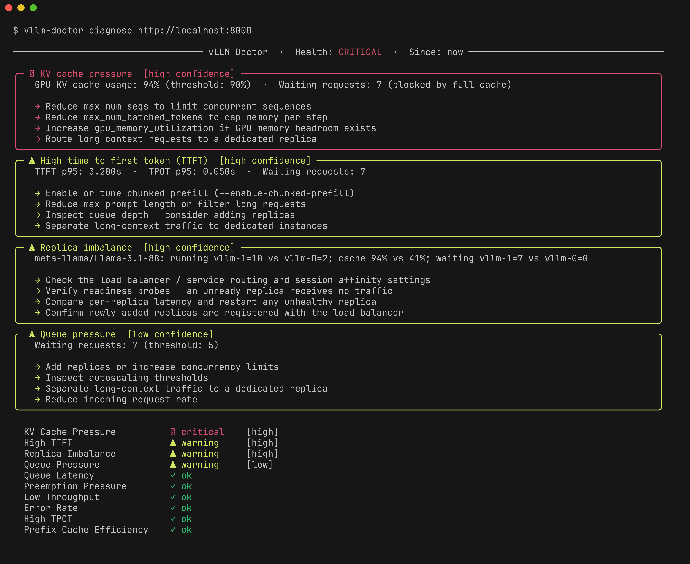

Introduction
Diagnose vLLM server bottlenecks from live metrics.

vLLM Doctor turns live vLLM metrics into a clear diagnosis: the most likely bottleneck, the evidence behind it, and the next checks to make.
vllm-doctor diagnose http://localhost:8000/metrics
Built for incident context
vLLM Doctor is not a dashboard replacement or benchmark runner. It is a fast server-side diagnostic snapshot for a single vLLM server or Prometheus target.
Features
- Built-in diagnosis rules — queue pressure, TTFT/TPOT bottlenecks, KV cache pressure, low throughput, error rate, replica imbalance, prefix cache efficiency, preemption pressure, queue latency
- Local history — persist runs with
--save, review withhistory listandhistory show - Watch change-log —
--save --watchonly persists when state changes (health or firing rules) - Dual input — Prometheus or direct
/metricsscrape - Structured output — rich text tables or JSON for automation
- Configurable thresholds — per-rule tuning via TOML
Why not just a dashboard?
Dashboards show metrics. vLLM Doctor explains server-side inference behavior.
| Dashboards | vLLM Doctor | |
|---|---|---|
| Shows raw metrics | ✓ | ✓ |
| Explains what's wrong | ✗ | ✓ |
| Recommends vLLM configs | ✗ | ✓ |
| Requires setup | ✓ | ✗ |
| Works on a single server | ✗ | ✓ |
How does this relate to GuideLLM?
GuideLLM is a good fit for generating workloads and measuring endpoint behavior. vLLM Doctor is a good fit for explaining server-side symptoms from vLLM metrics.
Used together, GuideLLM can create or replay load while vLLM Doctor helps explain bottlenecks such as queue pressure, KV cache pressure, high TTFT, or high TPOT.
Installation
curl -fsSL https://vllm.doctor/install.sh | sh
cargo install vllm-doctor
docker run --rm ghcr.io/vllm-doctor/vllm-doctor diagnose <url>
Quickstart
vllm-doctor diagnose http://localhost:8000/metrics
Note
Direct scrape mode reads instant gauge values. Latency percentile rules (TTFT, TPOT) are not available — use Prometheus mode for full diagnosis.
vllm-doctor diagnose http://localhost:9090
Run with Docker
A prebuilt image is published to GitHub Container Registry:
docker run --rm ghcr.io/vllm-doctor/vllm-doctor diagnose <url>
<url> is your vLLM /metrics or Prometheus endpoint — the same argument the CLI takes — reachable from inside the container.
Example verbose output
────────────────────────────────────────────────────────────────────────────────
vLLM Doctor · Health: CRITICAL · Since: now
────────────────────────────────────────────────────────────────────────────────
Likely bottleneck: KV cache saturation (high confidence)
Requests are likely waiting because the server has limited KV cache
headroom, often caused by high concurrency or long-context requests.
Findings
╭──────────────────────────────────────────────────────────────────────────────╮
│ ✖ KV cache pressure [high] │
│ │
│ kv_cache_usage_perc: 0.94 ≥ threshold 0.90 · num_requests_waiting: 7 │
│ │
│ → Reduce max_num_seqs to limit concurrent sequences │
│ → Reduce max_num_batched_tokens to cap memory per step │
│ → Increase gpu_memory_utilization if GPU memory headroom exists │
│ → Route long-context requests to a dedicated replica │
╰──────────────────────────────────────────────────────────────────────────────╯
╭──────────────────────────────────────────────────────────────────────────────╮
│ ⚠ High time to first token (TTFT) [high] │
│ │
│ ttft_p95_seconds: 3.20s ≥ threshold 2s · tpot_p95_seconds: 0.05s · │
│ num_requests_waiting: 7 │
│ │
│ → Enable or tune chunked prefill (--enable-chunked-prefill) │
│ → Reduce max prompt length or filter long requests │
│ → Inspect queue depth — consider adding replicas │
│ → Separate long-context traffic to dedicated instances │
╰──────────────────────────────────────────────────────────────────────────────╯
╭──────────────────────────────────────────────────────────────────────────────╮
│ ⚠ Replica imbalance [high] │
│ │
│ 1/2 replicas show elevated num_requests_running for meta-llama/Llama-3.1- │
│ 8B · 1/2 replicas show elevated kv_cache_usage_perc for meta- │
│ llama/Llama-3.1-8B · 1/2 replicas show elevated num_requests_waiting for │
│ meta-llama/Llama-3.1-8B │
│ │
│ → Check the load balancer / service routing and session affinity settings │
│ → Verify readiness probes — an unready replica receives no traffic │
│ → Compare per-replica latency and restart any unhealthy replica │
│ → Confirm newly added replicas are registered with the load balancer │
╰──────────────────────────────────────────────────────────────────────────────╯
╭──────────────────────────────────────────────────────────────────────────────╮
│ ⚠ Queue pressure [low] │
│ │
│ num_requests_waiting: 7 > threshold 5 │
│ │
│ → Add replicas or increase concurrency limits │
│ → Inspect autoscaling thresholds │
│ → Separate long-context traffic to a dedicated replica │
│ → Reduce incoming request rate │
╰──────────────────────────────────────────────────────────────────────────────╯
Passed
✓ Queue Latency ✓ Preemption Pressure ✓ Low Throughput
✓ Error Rate ✓ High TPOT ✓ Prefix Cache Efficiency
Observed Metrics:
Metric Value
Requests Running 12
Requests Waiting 7
GPU Cache Usage ███████████████████░ 94%
Prefill Tokens/s 390.0
Decode Tokens/s 252.0
Requests Success 114
Requests Error 0
Requests Aborted 0
TTFT p95 (s) 3.200
TPOT p95 (s) 0.050
Queue Time p95 (s) 0.800
Preemptions Total 0
Prefix Cache Hit Rate 50%
Observed Metrics per pod:
vllm-1 vllm-0
Requests Running 10 2
Requests Waiting 7 0
GPU Cache Usage 94% 41%
Prefill Tokens/s 80.0 310.0
Decode Tokens/s 42.0 210.0
Requests Success 30 84
Requests Error 0 0
Requests Aborted 0 0
Preemptions Total 0 0
Documentation
Read the full documentation: https://docs.vllm.doctor